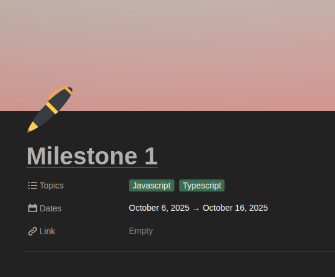

Milestone 1 of Hack4Impact
10-13-25

Milestone 1 taught me all about the trials and tribulations of pure HTML/CSS/TypeScript. It's hard to keep everything organized and a lot of duplication occurs. While I could definitely make improvements to the design, I think I'm glad with where I'm at right now. I spent a lot of time redesigning parts of the site because I am designing it on the fly, so I definitely see the value of a designer making mockups beforehand.